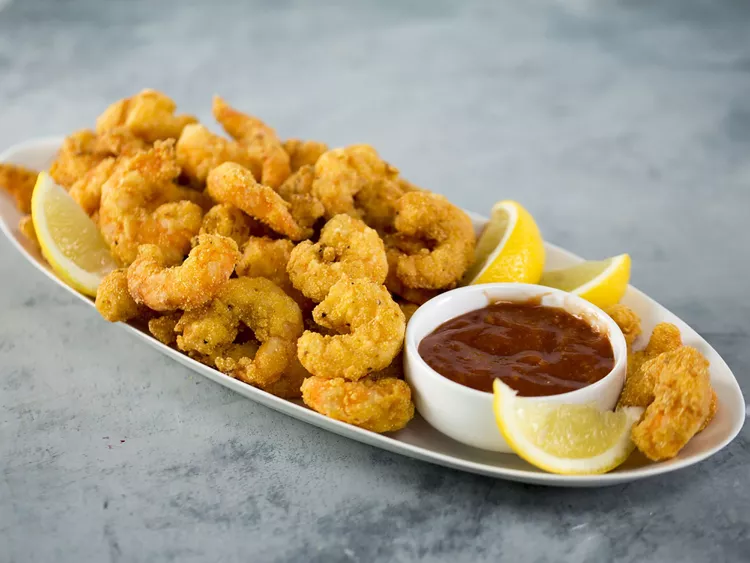

Perfect Fried Shrimp

Description
There truly is nothing better than a crispy, crunchy batch of fried shrimp.
This easy, no-fuss recipe is perfect when that salty craving hits.
Serve these lil' poppers in a po' boy or taco, or just enjoy them straight up with lemon wedges, cocktail sauce, and rémoulade.
Ingredients
- 3 cups canola oil, or as needed
- 2 large eggs, beaten
- 1 cup whole milk
- 2 tablespoons chile hot sauce
- 2 pounds large peeled, deveined raw shrimp
- 3/4 cup all-purpose flour
- 2/3 cup cornmeal
- 1 1/2 teaspoons kosher salt
- 1 teaspoon freshly ground black pepper
- 1/2 teaspoon cayenne pepper
Steps
- Pour oil to a depth of 2 inches in a large deep skillet; heat over medium-high to 370 degrees F (185 degrees C).
- Whisk together eggs, milk, and hot sauce in a shallow dish; add shrimp to mixture, and toss to coat. Whisk together flour, cornmeal, salt, black pepper, and cayenne pepper in a separate shallow dish.
- Remove 6 to 8 shrimp from egg mixture, shaking excess off; dredge in flour mixture. Place dredged shrimp in hot oil; fry until coating is golden and crisp, about 2 minutes. Remove with a slotted spoon to a baking sheet lined with paper towels. Repeat with remaining shrimp, bringing oil back to 370 degrees F(185 degrees C) over medium-high heat before adding each batch of shrimp.